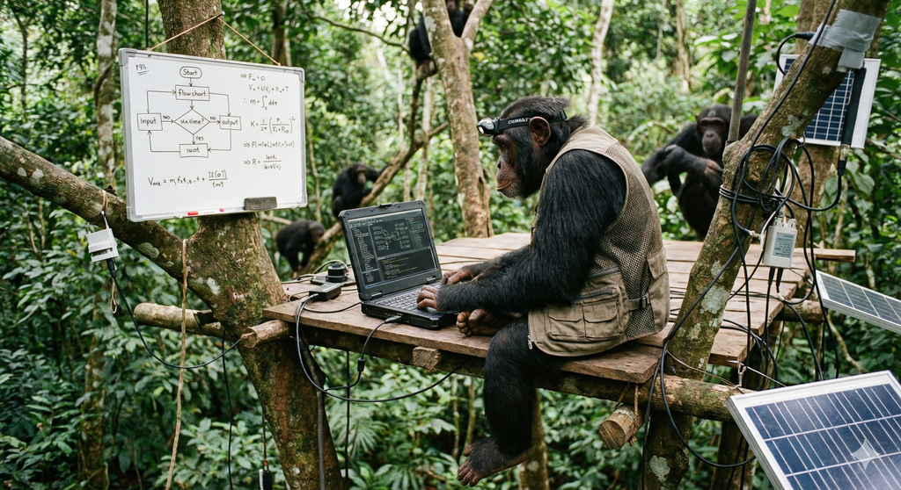

시스템 엔지니어링 (System Engineering)  현대 시스템 엔지니어링 V모델, W모델, 애자일 V모델 비교 ISO/IEC/IEEE 12207 종합 가이드 위험 관리형 나선형-애자일 개발 모델 MBSE와 디지털 트랜스포메이션 V모델 자동차 SOAFEE (Scalable Open Architecture for Embedded Edge) 소프트웨어 정의 차랑 항공 항공 인증 및 AI 보증을 위한 W-모델(W-Model) 프레임워크 RTCA DO 항공우주 시스템 인증을 위한 RTCA DO 표준의 포괄적 분석 및 기술적 함의 RTCA DO-178C 항공기 시스템 및 장비 인증을 위한 소프트웨어 고려사항 우주 NASA R2U2 사이버-물리 시스템을 위한 런타임 검증 프레임워크 SysML SysML TMR 모든 내부 레지스터에 대한 삼중 모듈 중복성(TMR) 적용을 통한 고신뢰성 아키텍처 설계 및 검증 사례 연구 시스템 엔지니어링 사례 연구